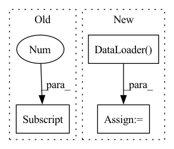

Pattern ID :38326

Before Change
model.eval()
out = model(target_img_tensor)
ps = torch.exp(out)
prediction_percentages = (ps.cpu().numpy()[0]).tolist()
pred = prediction_percentages.index(max(prediction_percentages))
pred_labels.append(pred)
After Change
true_labels = []
pred_labels = []
model.to(device)
target_data_loader = torch.utils.data.DataLoader(target_data_set,batch_size=16,shuffle=False)
for i, (imgs, labels, path) in tqdm(enumerate(target_data_loader), total=len(target_data_loader)):
imgs = imgs.to(device)
labels = labels.to(device)
In pattern: SUPERPATTERN
Frequency: 3
Non-data size: 3
Instances
Fragment ID: 109567787
Project Name: radtorch/radtorch
Commit Name: 8122128d39112011e292071d336ed2e52abd8008
Time: 2020-03-01
Author: elbanan@users.noreply.github.com
File Name: radtorch/visutils.py
M Class Name: AnonimousClass
N Class Name: AnonimousClass
M Method Name: show_confusion_matrix(6)
N Method Name: show_confusion_matrix(6)
M Parent Class:
N Parent Class:
M File Name: radtorch/visutils.py
N File Name: radtorch/visutils.py
M Start Line: 312
M End Line: 327
N Start Line: 312
N End Line: 328
'>
Before Change
image = cv2.imread(file)
image = cv2.cvtColor(image, cv2.COLOR_RGB2GRAY)
lbp = local_binary_pattern(image, 8, 1)
feat = np.histogram(lbp, 128)[0]
feat = torch.tensor(feat).unsqueeze(0).cuda()
if isinstance(file_feats, dict) is True:
file_feats = feat
else:
After Change
def GetAllFilesFeat(file_paths):
file_feats = {}
lbp_set = BatchLBPLoader(file_paths)
lbp_loader = torch.utils.data.DataLoader(lbp_set, batch_size=8, shuffle=False, num_workers=cpu_count() / 2)
// lbp_loader = torch.utils.data.DataLoader(lbp_set, batch_size=8, shuffle=False, num_workers=0)
for feat in tqdm(lbp_loader):
if isinstance(file_feats, dict) is True:
'>
Fragment ID: 109567786
Project Name: leoluopy/groupfacepytorch
Commit Name: 80355d53f4d903f1ad03a00c50127ece75ccc56c
Time: 2021-02-03
Author: lpy1990fff
File Name: cluster_ims.py
M Class Name: AnonimousClass
N Class Name: AnonimousClass
M Method Name: GetAllFilesFeat(1)
N Method Name: GetAllFilesFeat(1)
M Parent Class:
N Parent Class:
M File Name: cluster_ims.py
N File Name: cluster_ims.py
M Start Line: 19
M End Line: 32
N Start Line: 44
N End Line: 53
'>
Before Change
out = model(target_img_tensor)
// ps = torch.exp(out)
ps = out
prediction_percentages = (ps.cpu().numpy()[0]).tolist()
pred = prediction_percentages.index(max(prediction_percentages))
pred_labels.append(pred)
show_roc(true_labels, pred_labels, auc=auc, figure_size=figure_size)
After Change
true_labels = []
pred_labels = []
model.to(device)
target_data_loader = torch.utils.data.DataLoader(target_data_set,batch_size=10,shuffle=False)
for i, (imgs, labels) in enumerate(target_data_loader):
imgs = imgs.to(device)
labels = labels.to(device)
'>
Fragment ID: 109567785
Project Name: radtorch/radtorch
Commit Name: 74b5ef917af3aebdf033166bf8b81cbc9ceb9b6e
Time: 2020-03-01
Author: elbanan@users.noreply.github.com
File Name: radtorch/visutils.py
M Class Name: AnonimousClass
N Class Name: AnonimousClass
M Method Name: show_nn_roc(5)
N Method Name: show_nn_roc(5)
M Parent Class:
N Parent Class:
M File Name: radtorch/visutils.py
N File Name: radtorch/visutils.py
M Start Line: 199
M End Line: 216
N Start Line: 201
N End Line: 215